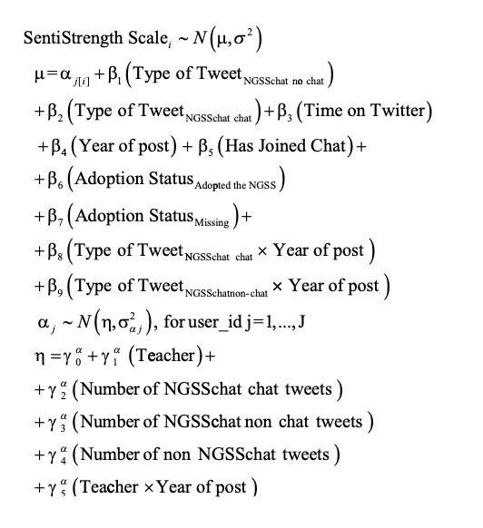
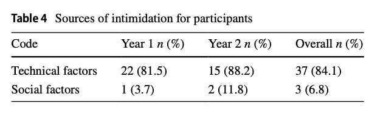

Practice-based Education Data Science: A Proposal for Our Emerging Field
A keynote presentation at the Stanford Education Data Science conference
What is Education Data Science, Really?
What do you mean by …
My goal is to improve educational outcomes. My goal is to improve educational outcomes. My goal is to improve educational outcomes.
Perspectives

A question
Is EDS a methodological program that takes education as a use case, or is it work that is situated in educational contexts and accountable to its educational impacts?
My pathway to the problem
My background

Excel

Word Clouds

Software

DSIEUR

CREDIBLE

A question
What is your pathway to education data science
Timely Gaps and Problems
Allied fields are doing good work

Need for impact
NSF, tech backlash
Data needs unmet

Jamie (Industry; Instructional Design): “Educational data scientist is like a unicorn of five different roles all combined into one. So they’re a data engineer, and they are data analysts and they are data scientists, and they’re learning scientist, and they are a researcher.”
Staudt Willet and Rosenberg, 2024
Cleveland’s Challenge to Statisticians (and Us)
What impacts the work of the data analyst?
Table
Key quote about impact on practicing data analysts
If education is the domain
What if we asked this for educational data science?
- Not only methods in an application area
- A consequential domain of practice
- A broader portfolio of work
Five possible avenues – someone might work on some of these and not others. That is fine!
The claim is about what the field as a whole should count as central.
Five Avenues (Among Others)
There are examples
These can bring us closer to educational practice, be distinct from “general” data science, and be an area of comparative advantage.
- Right-sized data problems
- Data science education infrastructure
- Research-practice partnerships around data education
- Not ending with the journal article
- Teaching practitioners and researchers
I’ll focus on three of these
Right-sized data problems
Blair (Higher Education; Administrator): A lot of my job is taking data that the school generates and helping the students to better understand their progress and also helping the faculty to better understand how to assess students’ progress and better support them… It’s not even a very sophisticated analysis, but it’s aggregating it together and presenting it to them in a way that they can take action on it.
Jamie (Industry, Learning Analytics): “And it’s so so simple, almost boringly simple.”
Staudt Willet & Rosenberg (2024)
Right-sized data problems
Agasisti and Bowers (2017) argued that the work of an educational data scientist would be “extremely delicate because it simultaneously necessitates the technical capacity for sophisticated data analysis and the sensibility for the specificities of the educational field” (p. 198).
“In recent years, advances in computing and information technologies have radically expanded the data available to researchers and professionals in a wide variety of domains, from government and biotechnology, to business logistics and professional sports.
Baker and Yacef (2009, JEDM):
Data science education infrastructure
Teacher preparation - DS4E
Cleveland mentioned!
Show survey findings
Research-practice partnerships
RPP collaboratory
LEADS-DS
Trust, service — and research
JS photo
Not only these five
- Right-sized data problems
- Data science education infrastructure
- Research-practice partnerships around data education
- Not ending with the journal article
- Teaching practitioners and researchers
- … (from the presentations today and tomorrow)
- …
A few words on AI (that haven’t been said already)
AI can help us engage with practice more easily, or it can isolate us from avenues of work that can be impactful to teachers, learners, and educational systems
AI as a normal technology
Back to the core question
Is EDS a methodological program that takes education as a use case, or is it work that is situated in educational contexts and accountable to its educational impacts?
Turn and talk
If we replace “data analyst” with “data in education”, what should our field do?
An Example from Project CREDIBLE
Starting with practitioner needs
Jen photo
Shiny + CODAP

It failed

Then we fixed it

Local water quality data
E coli
Fragile but impactful
This combines multiple possible directions - RPPs, tool building, right sized data, DS infrastructure, sharing public tols
This work is fragile, local, and contingent, but potentially impactful
I call this work practice-based education data science
Conclusion
A choice!
Is EDS a methodological program that takes education as a use case, or is it work that is situated in educational contexts and accountable to its educational impacts?
We might call practice-based education data science, simply, education data science
If education is the domain, practice is not optional; it is where the domain lives.
Educational data scientists are uniquely positioned to connect technical work, educational practice, practitioner capacity, and public value.
Acknowledgements
Project CREDIBLE teachers around Knox County Schools, especially teacher leaders and Jen Sauer Zhen Xu, Cody Pritchard, Leah Rosenbaum, and Bradley Holtz at the University of Tennessee Knoxville spo NSF grant no. XX